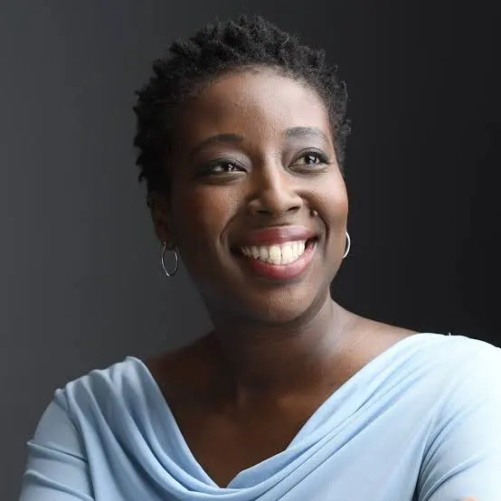

Tech heroes / Meet Ethan's Tech Hero
Afua Bruce
Engineering with communities in mind.

Technology should serve people
Afua Bruce is an engineer, author, and public interest
technologist whose work connects technology, policy,
and society. She has held senior science and technology
positions at DataKind, the White House, the FBI, and IBM.
She earned a computer engineering degree from Purdue
University and an MBA from the University of Michigan.
Bruce advocates for equity through technology:
her approach connects technical decisions to the people
and communities affected by them. With her experience in U.S.
government and nonprofit; Bruce approaches
relevant questions about who benefits from public
systems and whose needs get overlooked. What stands out to us is her focus on people.
For someone interested in IT and cybersecurity,
her work is a reminder that a successful system
should be helping the people.
Tech heroes / Meet Casey's Tech Hero
Joy Buolamwini
Researcher for Fair Technology
Technology should serve people
Joy Buolamwini is a computer scientist and researcher
who focuses on making technology fair for everyone.
Joy studied at Georgia Tech and MIT and later founded
the Algorithmic Justice League, an organization that works
to bring attention to unfairness in AI.
Joy noticed that facial recognition software
had trouble recognizing her face because of her
darker skin complexion. This ignited her interest
and advocation to research these problems within AI.
Often displayed in her work, she highlights that
even technology could embody bias.
What stands out to us about Joy was her dedication
to take a real world experience and find a resolution
to it. Her experience with facial recognition software
shows us that even as technology continues advancing, it
doesn't correlate to being fair and equitable.